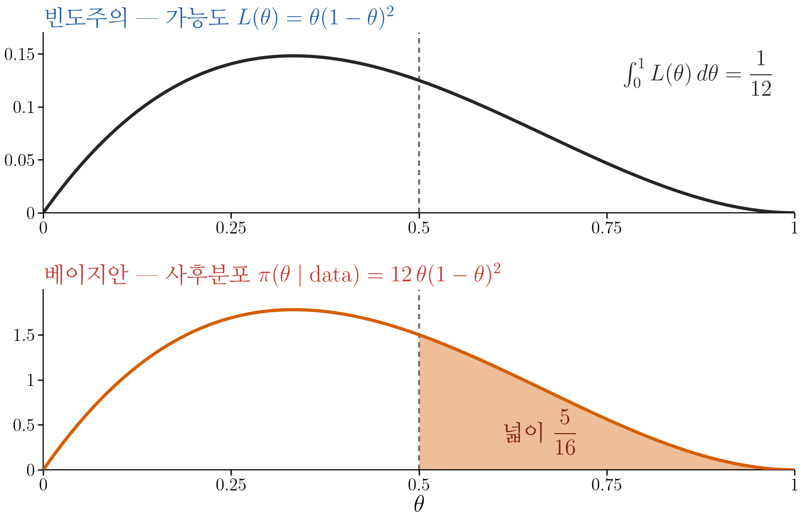
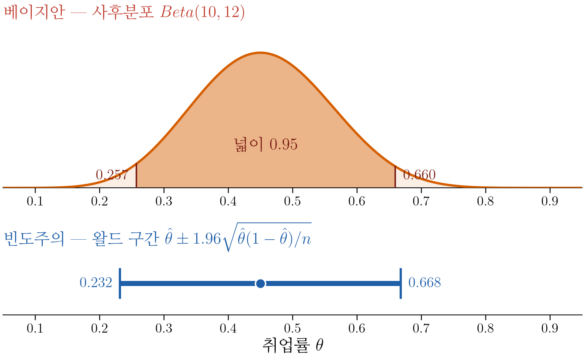
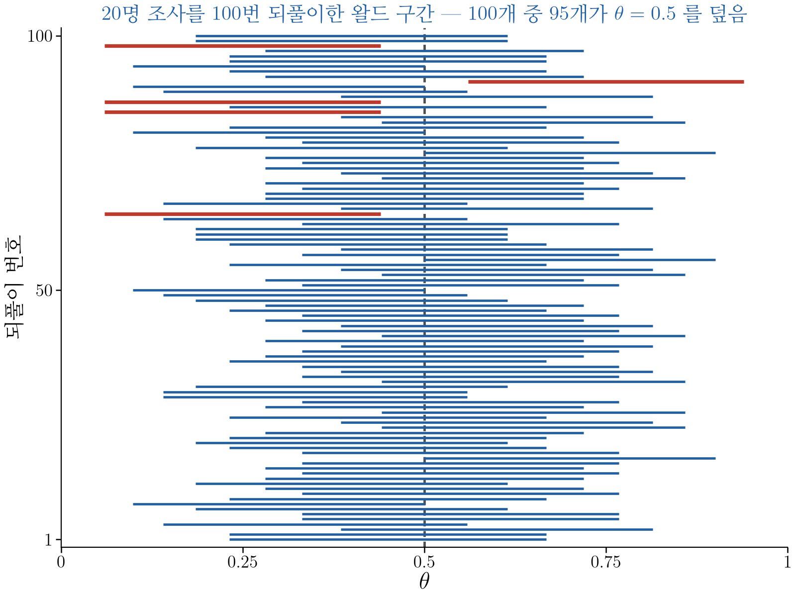
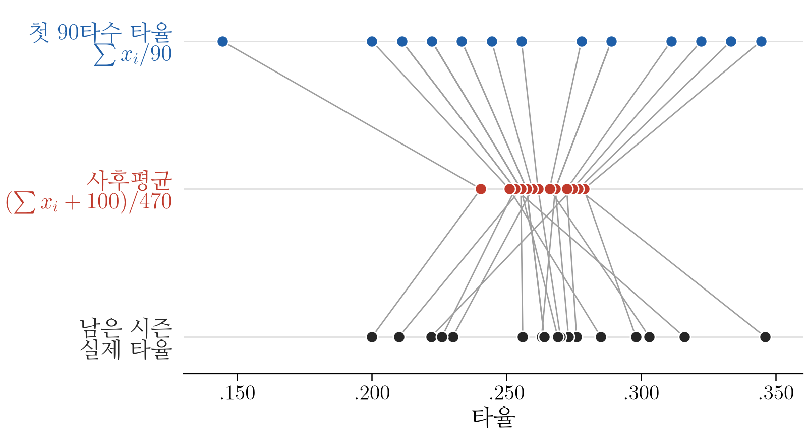

12wk-1: 베이지안식 해석 (3)
1. 강의영상
2. 베이지안식 해석이 가지는 장점
- 베이지안식 해석이 가지는 장점
- 예측이 사후분포 그 자체다.
- 주관적인 직관이 잘 맞으면 예측이 잘 된다.
- …
3. 예측이 사후분포 그 자체다
@@@ “\(\theta\) 가 ~~ 일 확률(밀도)” 이라는 말이 이제는 가능하다. “\(\theta\) 가 ~~~ 구간에 있을 확률” 도 가능하다.
# 예제1 – \(\theta>0.5\) 일 확률 (05wk-2 연습문제 문제1 다시 보기)
1이 나올 확률이 \(\theta\) 인 동전을 3번 던져서 \(0,\ 1,\ 0\) 을 얻었다. 참값 \(\theta\) 는 모른다. 이때 “\(\theta\) 가 \(0.5\) 보다 클 것 같다” 는 말에 확률을 붙일 수 있는가? 빈도주의와 베이지안으로 각각 답하라. (베이지안은 \(U(0,1)\) 인 사전분포를 이용한다)
(풀이)
| 빈도주의 | 베이지안 | |
|---|---|---|
| 모형 | \(X_1,X_2,X_3\overset{i.i.d.}{\sim}Ber(\theta)\) | \(\theta\sim U(0,1)\), \(X\mid\theta\sim Ber(\theta)\) |
| 모르는 \(\theta\) 를 | 상수로 둔다 | 확률변수로 둔다 |
| 자료를 본 뒤 얻는 것 | 가능도 \(L(\theta)=\theta(1-\theta)^2\) | 사후분포 \(\pi(\theta\mid\text{data})=12\,\theta(1-\theta)^2\) |
| “\(\theta>0.5\) 일 확률” | 말할 수 없다 (참이거나 거짓) | \(\frac{5}{16}\approx0.31\) |

같은 자료(동전 3번, \(0,\ 1,\ 0\))의 가능도와 사후분포
- 빈도주의: 가능도는 \(\theta\) 의 확률이 아니다(05wk-2). 넓이가 \(\frac{1}{12}\) 이고, \(\theta=0.495,0.496,\dots,0.505\) 의 11개 값만 더해도 \(1.375\) 로 \(1\) 을 넘는다.
- 베이지안: 가능도에 사전분포를 곱하고 넓이가 \(1\) 이 되게 나누면 사후분포다. \(U(0,1)\) 은 곱해도 모양이 그대로라, 사후분포는 가능도를 \(12\) 배 한 것이다.
\[\pi(\theta\mid\text{data})=\frac{\theta(1-\theta)^2}{\int_0^1\theta(1-\theta)^2\,d\theta}=12\,\theta(1-\theta)^2\]
\[P(\theta>0.5\mid\text{data})=\int_{0.5}^{1}12\,\theta(1-\theta)^2\,d\theta=\frac{5}{16}\]
- 모양은 같고 넓이만 \(1\) 로 맞췄을 뿐인데, 그때부터 “\(\theta\) 가 ~~ 일 확률” 을 넓이로 말할 수 있다.
#
@@@
# 예제2 – 취업률의 95% 구간
우리 학과 졸업생 중 연락이 닿은 20명 가운데 9명이 취업했다. 사전분포와 자료의 분포를 아래처럼 둔다.
- \(\theta\sim Beta(1,1)\)
- \(X\mid\theta\sim Ber(\theta)\) (\(X_i=1\) 은 취업)
올해 취업률 \(\theta\) 의 95% 구간을 빈도주의와 베이지안으로 각각 구하고, 두 구간을 어떻게 읽는지 견주어라.
(풀이)
- 빈도주의 — 95% 신뢰구간(왈드 구간). \(\hat\theta=\frac{9}{20}=0.45\) 로 두면
\[\hat\theta\pm1.96\sqrt{\frac{\hat\theta(1-\hat\theta)}{n}}=0.45\pm1.96\times0.111=[0.232,\ 0.668]\]
- 베이지안 — 95% 크레더블 인터벌(credible interval). 사후분포는 \(Beta(1+9,\ 1+11)=Beta(10,12)\) 이다(구하는 법은 11wk-2). 이 사후분포의 양 끝에서 넓이 \(0.025\) 씩을 떼고 남은 가운데 구간이 \([0.257,\ 0.660]\) 이다(Gelman et al., 2013, p. 33; Efron & Hastie, 2016, p. 29).

같은 자료(20명 중 9명)로 만든 두 구간
- 숫자는 거의 같은데 뜻이 다르다.
| 신뢰구간 (빈도주의) | 크레더블 인터벌 (베이지안) | |
|---|---|---|
| 95% 구간 | \([0.232,\ 0.668]\) | \([0.257,\ 0.660]\) |
| 확률이 붙는 것 | 구간 — 자료가 바뀌면 구간이 바뀐다 | \(\theta\) — 자료를 본 뒤의 \(\theta\) 의 분포 |
| “\(\theta\) 가 이 구간에 있을 확률이 0.95” | 틀린 말. \(\theta\) 는 상수라 이 구간 안에 있거나 없거나 둘 중 하나다 | 맞는 말. \(P(0.257<\theta<0.660\mid\text{data})=0.95\) |
| 95% 의 뜻 | 같은 조사를 되풀이해 구간을 만들면 그중 95% 쯤이 \(\theta\) 를 덮는다 | 자료를 본 뒤 \(\theta\) 가 이 구간에 있을 확률 |
- 신뢰구간의 95% 는 되풀이에서 나온다. 참값이 \(\theta=0.5\) 라고 하고, 20명 조사를 100번 되풀이해 신뢰구간을 100개 만들면 아래와 같다.

빨강은 \(\theta\) 를 못 덮은 구간
- 신뢰구간의 “95%” 는 구간을 만드는 방법에 붙는 숫자다. 되풀이하면 95% 쯤이 \(\theta\) 를 덮는다(Efron & Hastie, 2016, p. 17). 우리가 얻은 구간 하나 \([0.232,\ 0.668]\) 이 \(\theta\) 를 덮었는지는 모른다. 그 하나에는 확률을 말하지 못한다.
- 크레더블 인터벌은 자료를 본 뒤의 \(\theta\) 의 분포에서 잘라 낸 구간이다. 그래서 “\(\theta\) 가 \(0.257\) 과 \(0.660\) 사이에 있을 확률이 \(0.95\)” 라고 그대로 읽는다. 구간의 해석이 매우 쉽다.
- 이 이득에는 주관이 들지 않는다. 사전분포가 평평한 \(Beta(1,1)\) 이어도 그대로다.
#
4. 주관적인 직관이 잘 맞으면 예측이 잘 된다
# 예제3 – 야구 타율 예측
1970년 미국 프로야구 타자 18명이 시즌 첫 90타수에서 친 안타 수는 차례로 31, 30, 29, 28, 26, 26, 25, 23, 22, 21, 21, 20, 20, 20, 19, 19, 18, 13 이다(Efron & Hastie, 2016, 표 7.1, p. 95 의 첫 90타수 타율에 90 을 곱해 셈). 이 자료로 선수마다 타율 \(\theta\) 를 추정해 남은 시즌의 실제 타율을 예측하려 한다. 야구를 아는 사람은 타율이 대개 \(.220\sim.310\) 이라고 생각한다. 이 직관을 사전분포로 넣어, 선수마다 사전분포와 자료의 분포를 아래처럼 둔다.
- \(\theta\sim Beta(100,280)\)
- \(X\mid\theta\sim Ber(\theta)\) (\(X_i=1\) 은 안타)
빈도주의(첫 90타수 타율 \(\frac{\sum x_i}{90}\))와 베이지안(사후평균)으로 예측하고, 남은 시즌의 실제 타율과 견주어라.
(풀이)
- \(Beta(100,280)\) 은 평균이 \(\frac{100}{380}=.263\) 이고 가운데 넓이 \(0.95\) 구간이 \([.220,\ .309]\) 다. 위의 직관을 그대로 옮긴 것이다.
- 사후평균은 아래와 같다(구하는 법은 11wk-2).
\[E(\theta\mid\text{data})=\frac{\sum x_i+100}{90+380}=\frac{380}{470}\times\underbrace{\frac{100}{380}}_{\text{직관}}+\frac{90}{470}\times\underbrace{\frac{\sum x_i}{90}}_{\text{자료}}\]
직관과 자료를 대략 \(81:19\) 로 섞는다. 첫 90타수에서 유난히 잘 치거나 못 친 선수일수록 직관 쪽(\(.263\))으로 많이 당겨진다.
| 선수 | 첫 90타수 안타 \(\sum x_i\) | 빈도주의 \(\frac{\sum x_i}{90}\) | 베이지안 \(\frac{\sum x_i+100}{470}\) | 남은 시즌 실제 타율 |
|---|---|---|---|---|
| 1 | 31 | .344 | .279 | .298 |
| 2 | 30 | .333 | .277 | .346 |
| 3 | 29 | .322 | .274 | .222 |
| 4 | 28 | .311 | .272 | .276 |
| 5 | 26 | .289 | .268 | .263 |
| 6 | 26 | .289 | .268 | .273 |
| 7 | 25 | .278 | .266 | .303 |
| 8 | 23 | .256 | .262 | .270 |
| 9 | 22 | .244 | .260 | .230 |
| 10 | 21 | .233 | .257 | .264 |
| 11 | 21 | .233 | .257 | .264 |
| 12 | 20 | .222 | .255 | .210 |
| 13 | 20 | .222 | .255 | .256 |
| 14 | 20 | .222 | .255 | .269 |
| 15 | 19 | .211 | .253 | .316 |
| 16 | 19 | .211 | .253 | .226 |
| 17 | 18 | .200 | .251 | .285 |
| 18 | 13 | .144 | .240 | .200 |

첫 90타수 타율 → 사후평균 → 남은 시즌 실제 타율
- 18명의 오차 제곱의 합 \(\sum(\text{예측}-\text{실제})^2\) 으로 견주면 아래와 같다.
| 예측 | 18명 오차 제곱의 합 |
|---|---|
| 빈도주의: 첫 90타수 타율 | \(0.0425\) |
| 베이지안: 맞는 직관 \(Beta(100,280)\) (평균 .263) | \(0.0201\) |
| 베이지안: 틀린 직관 \(Beta(130,250)\) (평균 .342) | \(0.0849\) |
- 직관이 잘 맞으면 예측이 잘 된다. 오차가 절반 아래로 줄고, 18명 중 13명은 베이지안 예측이 실제에 더 가깝다.
- 직관이 틀리면 손해다. “이 선수들은 .340 쯤 친다” 는 직관(\(Beta(130,250)\))이면 오차가 빈도주의의 두 배다. 베이지안은 사전분포가 맞는다는 데 건다(Efron & Hastie, 2016, p. 35).
#
5. 정리
| 빈도주의 | 베이지안 | |
|---|---|---|
| 답 | 추정값 하나와 신뢰구간 | \(\theta\) 의 분포(사후분포) |
| “\(\theta>0.5\) 일 확률” · “\(\theta\) 가 이 구간에 있을 확률” | 말할 수 없다 | 말할 수 있다 (예제1 · 예제2) |
| 주관적인 직관 | 쓰지 않는다 | 사전분포로 넣는다 — 맞으면 이득(예제3), 틀리면 손해 |
참고문헌
- Efron, B., & Hastie, T. (2016). Computer Age Statistical Inference: Algorithms, Evidence, and Data Science. Cambridge University Press.
- Gelman, A., Carlin, J. B., Stern, H. S., Dunson, D. B., Vehtari, A., & Rubin, D. B. (2013). Bayesian Data Analysis (3rd ed.). CRC Press.